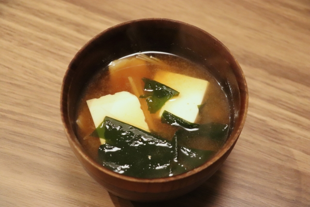
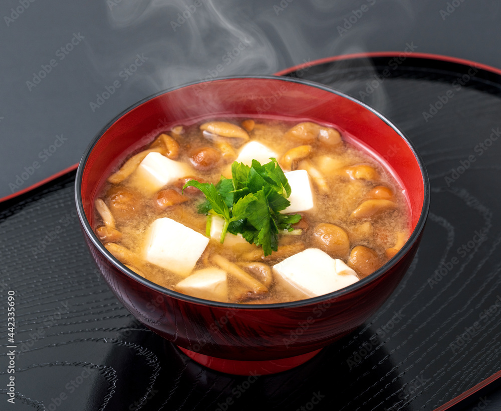
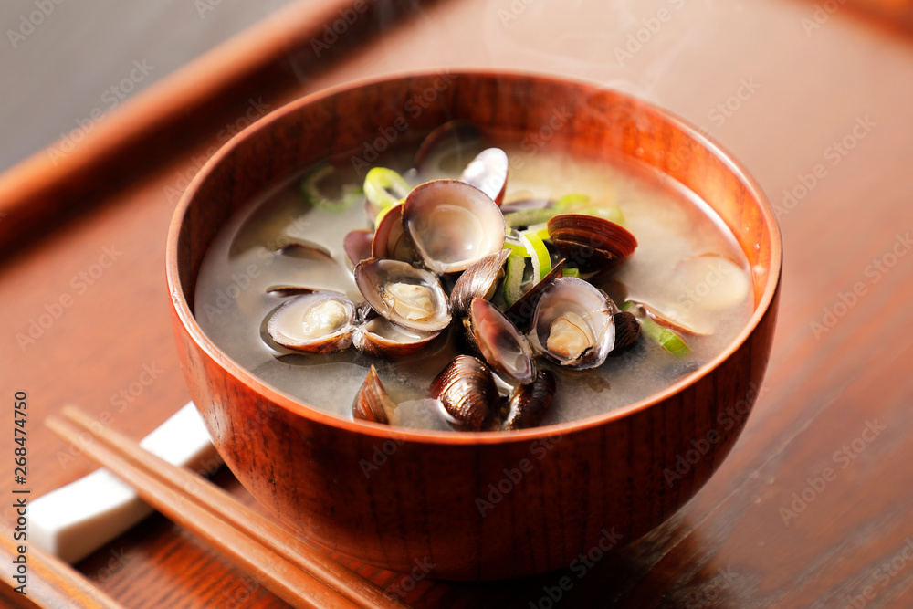

|  |
To-fu and Wakame Misou Soup |
- To-fu
- Wakame Seaweed
- Dashi
- Miso
- Fish stock
|
Kanto (around Tokyo) |
The most common Miso soup in Kanto. |
|  |
Nameko-jiru |
- Nameko mushroom
- To-fu
- Dashi
- Miso
- Fish stock
|
Kanto |
Nameko mushroom has slimy texture. |
|  |
Shijimi-jiru |
- Shijimi
- Dashi
- Miso
- Fish stock
|
Kanto |
Often eaten for Recovery from fatigue and hangover. |
|
Kentin-jiru |
- Pork
- Onion
- Carrot
- Satoimo
- Gobou
- Dashi
- Miso
- Fish stock
|
Kanagawa, Kanto |
Firstly tir-fry ingredients and stew with Miso. |
|
Miso Soup with Natto |
- Natto
- negi
- To-fu
- Abura-age
- Dashi
- Miso
- Fish stock
|
Yamagata prefecture |
Natto is fermented soybeans which is sticky and has unique smell. |